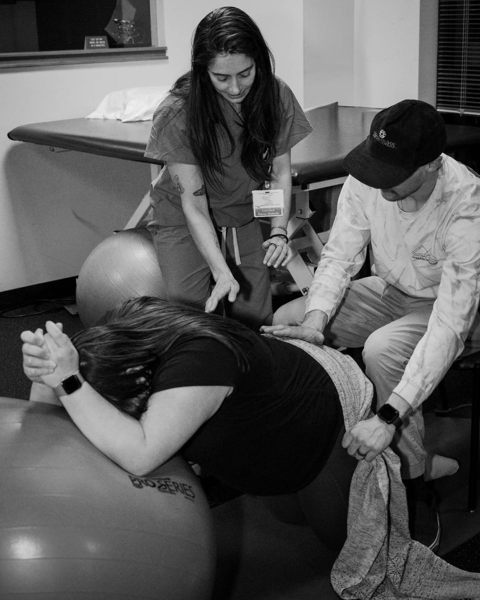
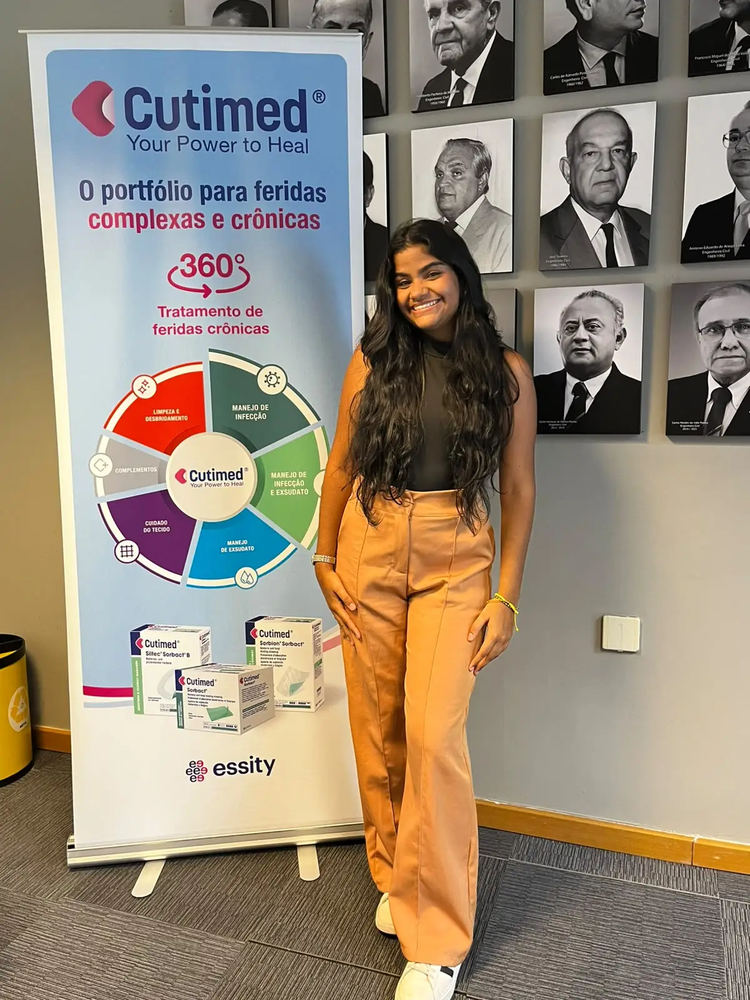
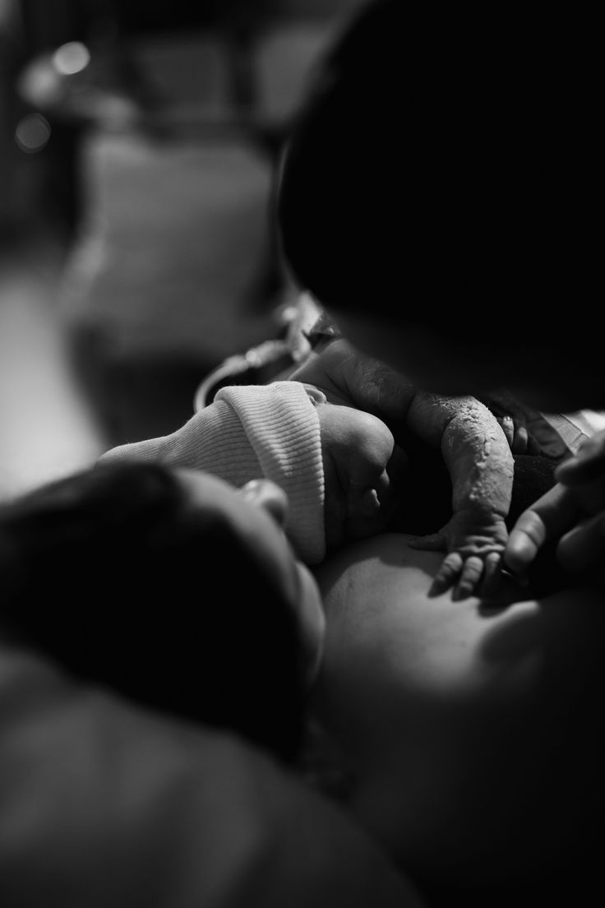

Confiar
O nascimento é um processo fisiológico que pode acontecer melhor em ambientes calmos.
Sobre mim
Oi, eu sou Ashley, tenho 23 anos e sou de Salvador, Bahia. Sou doula e estudante do 7º semestre de Enfermagem, movida pelo sonho de me tornar enfermeira obstetra e me especializar em saúde da mulher.
Fiz minha formação como doula porque sempre fui apaixonada por esse universo e pela possibilidade de acolher e apoiar mulheres durante a gestação, o parto e o pós-parto.
Acredito em um cuidado baseado em informação, respeito e acolhimento, tornando cada experiência mais leve, segura e humanizada. Meu papel é orientá-la, defendê-la e apoiá-la para que sua experiência de parto reflita seus valores e suas necessidades.


O nascimento é um processo fisiológico que pode acontecer melhor em ambientes calmos.

O nascimento é um processo fisiológico que pode acontecer melhor em ambientes calmos.

O nascimento é um processo fisiológico que pode acontecer melhor em ambientes calmos.